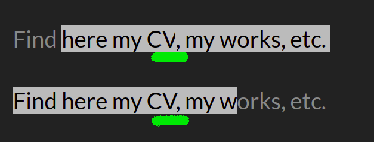

Welcome! This is a bug report of sort.
Try to select some text, and find the implementation bug
Find here my CV, my works, etc.
Find here my CV, my works, etc.
To me both on Firefox and Chromium I see something like:
Ideally file the problem with whatever engine, and keep me in the loop
GitHub -> repo
Twitter -> @carlop54002226